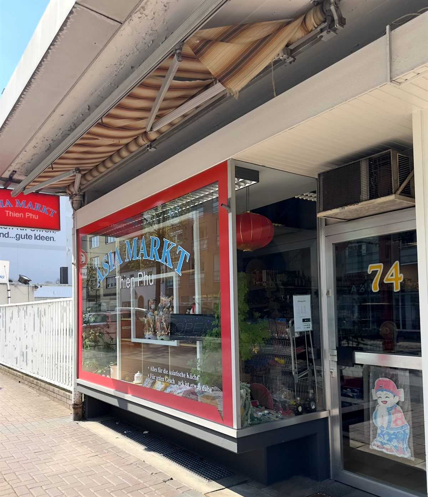
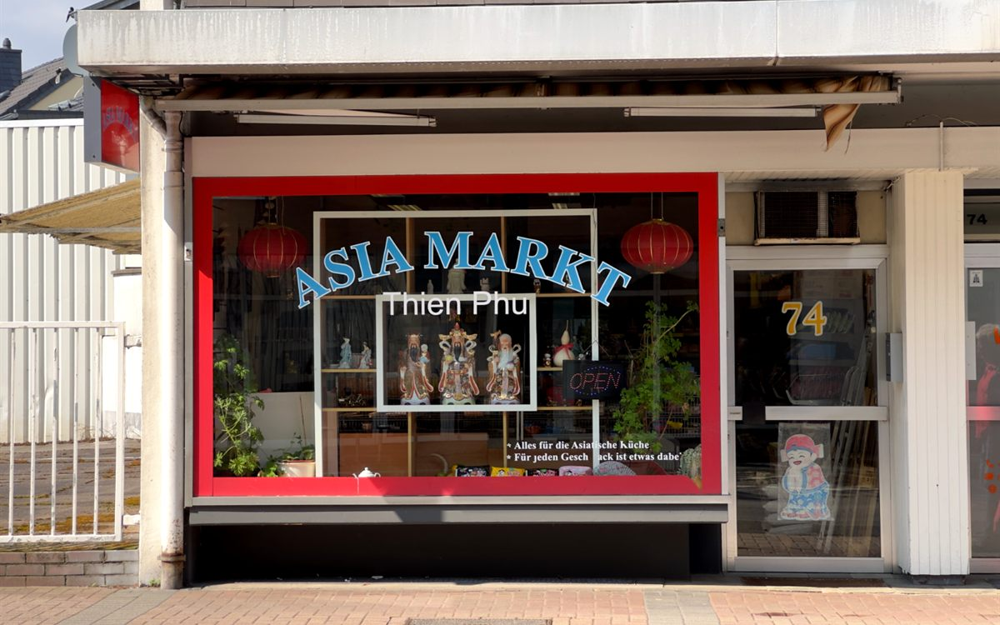
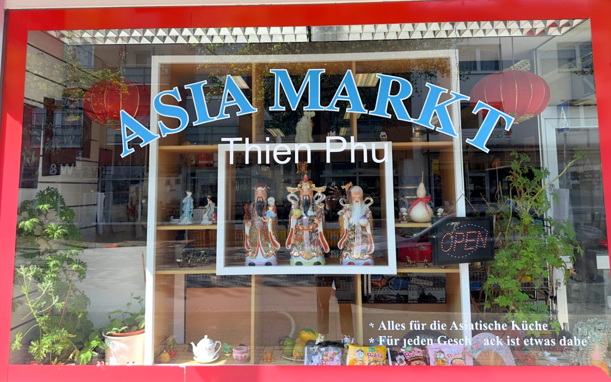
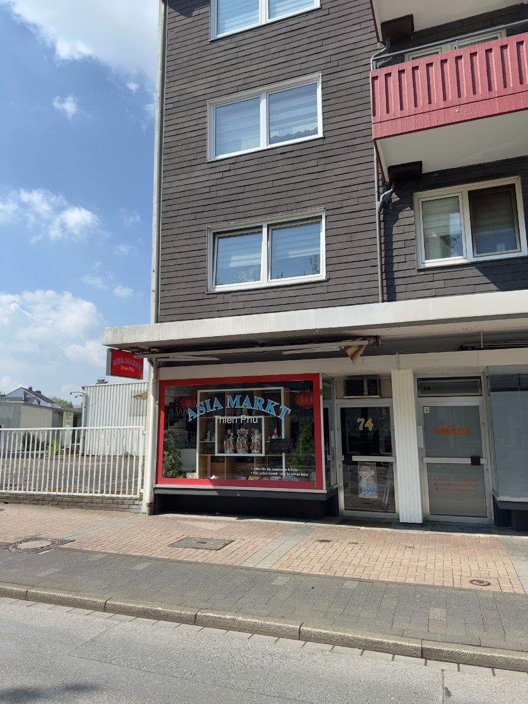

Der Laden
Seit 2007 an der Hauptstraße. Ein Familienbetrieb, kein Filialist.

Wir suchen die Ware selbst aus: bekannte asiatische Marken, die auch in Asien im Alltag auf dem Tisch stehen, von der vietnamesischen Pho über thailändisches Curry bis zum japanischen Ramen.
Frisches Gemüse und Kräuter kommen regelmäßig neu. Und wenn Sie nicht weiterwissen: fragen Sie. Das ist der Vorteil eines kleinen Ladens.
2007
in Langenfeld
4,4 ★
127 Google-Bewertungen
Karte
und Bargeld
15 Min
gratis parken gegenüber


